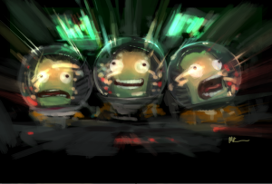

This page was developed by /u/OutOfMemory detailing the technology tree of the game Kerbal Space Program from Squad.
Data collected from the KSP Wiki and the game's data files.
Report any inaccuracies or bugs to Github. Please include your browser name and version, your operating system, and a screenshot if appropriate.